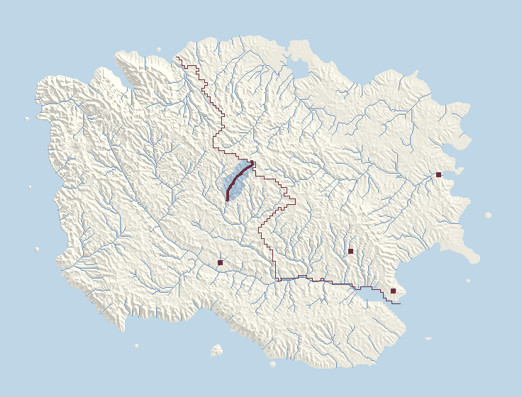

Lontra
River of Urvania
 The Lontra and its basin; dots: towns | |
| Country | Urvania |
|---|---|
| Length | 70 km |
| Basin | 1,105 km² |
| Source | about 820 m |
| Mouth | Bruna |
| Names | Lontra (Italian) · Zhazstan (Urvanian) |

The Lontra rises at about 820 m in Urvania and joins the Bruna after 70 km; its basin covers 1,105 km². Its Urvanian name, Zhazstan, means otter.[1][2]